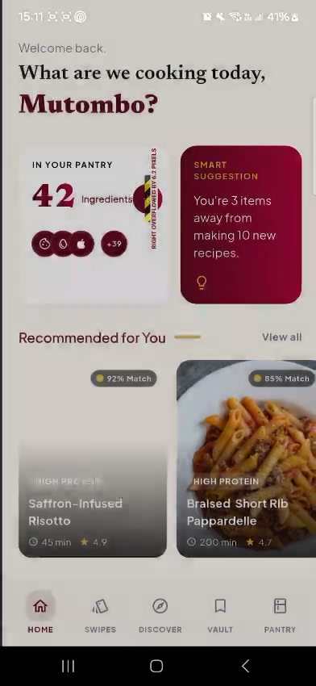
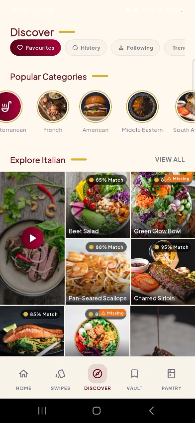
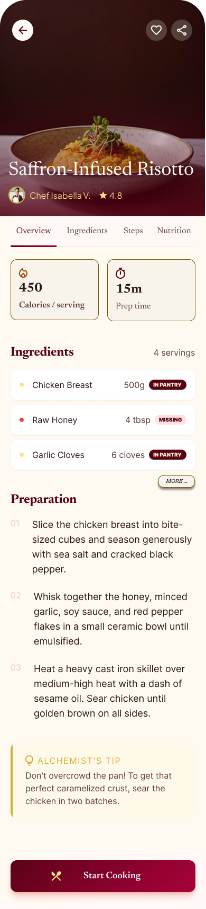
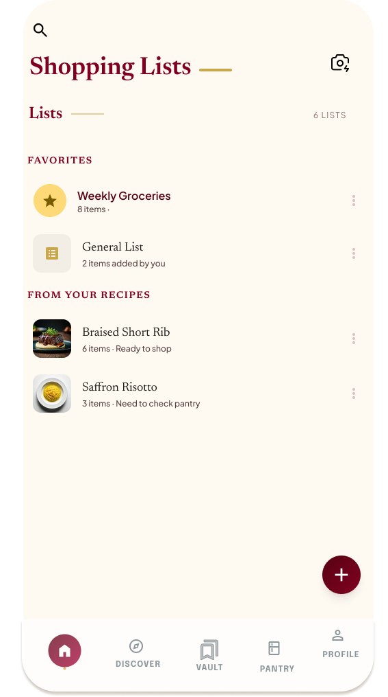
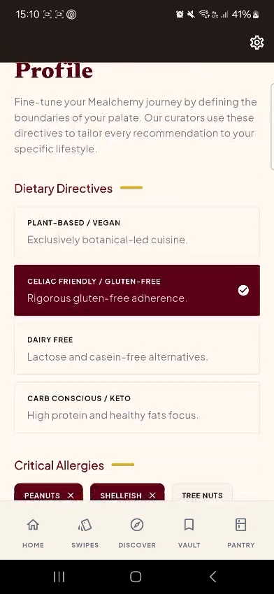

Intelligent recipe management ecosystem
Turn your pantry into personalised meals.
Mealchemy is a recipe vault and guided discovery system that reduces mealtime decision fatigue by matching recipes to ingredients, preferences, nutrition goals, and shopping needs.
- Swipe
- Tinder for food
- Chef
- A personal chef in your pocket
- Learn
- Smarter with every swipe
Explains why a recipe is recommended.
The problem
Cooking should feel guided, not exhausting.
Users are juggling scattered recipes, half-known pantry stock, nutrition concerns, dietary preferences, and grocery decisions. Mealchemy brings those pieces into one calmer workflow.
Recipe fragmentation
Recipes disappear into screenshots, bookmarks, notes, social media saves, and memory.
Decision fatigue
Too many meal options can make choosing dinner feel harder than cooking it.
Shopping disconnect
Users often decide on meals without knowing what they already have or still need to buy.
The solution
An intelligent path from pantry to plate.
Mealchemy combines a personal recipe vault, pantry-aware recommendations, guided swipe discovery, automated shopping lists, and nutrition insight into one mobile-first decision-support experience.
Vault
Save recipes
Pantry
Check ingredients
Discover
Swipe smarter
Cook
Shop only gaps
Guided discovery
See how Mealchemy turns a global recipe vault into a personal swipe deck.
The engine is deterministic, explainable, and built as three clear phases. It knows the user, knows their pantry, blocks what cannot be served, and scores the rest.

Phase 2 · One candidate
Garlic Chicken Stir-Fry
Five weighted signals
Pantry coverage0.78
Cuisine affinity0.85
Nutritional goal0.68
Freshness0.92
Novelty0.40
Weighted affinity score0.78
Phase 3 · Final batch
20 recommendation slots
Grouped by cuisine affinity
1 to 2 wildcard slots
Final 20BackendFlutter swipe deck
After each swipe
+
EMA · α = 0.15
Profile updated gradually
The learning loop
Each swipe updates two different parts of the profile.
Global signal weights and cuisine affinity are updated separately. The exponential moving average keeps personalisation responsive without letting one decision cause a drastic change. The engine remains stateless, while the backend stores the updated profile.
Core functionality
Built around the product’s highest-value capabilities.
Each feature connects the user’s pantry, preferences, recipes, and shopping decisions into one clear cooking workflow.
Recipe Vault
Centralised storage for custom recipes, external links, saved suggestions, and shared recipe content.
Pantry-Aware Recommendations
Heuristic matching uses available ingredients, cooking styles, dietary constraints, and nutrition targets.
Guided Discovery
A swipe-based decision interface helps users quickly like, reject, and refine recipe suggestions.
Smart Shopping List
Selected recipes become ingredient gap lists, connecting meal choice directly to grocery planning.
Nutrition Calculator
Calories and macronutrients are calculated from recipe ingredients and cooking methods.
Preference Engine
Profiles account for dietary restrictions, allergies, dislikes, and flavour preferences.
Product screens
A mobile-first experience that explains itself quickly.
Real current-build screens are used where available, with design mockups retained for the Vault, Shopping Lists, and recipe-creation flows.
Dashboard · Live app
A calm command centre for cooking decisions.
The dashboard surfaces pantry status, smart suggestions, recommended recipes, and trending ideas without overwhelming the user.

Discover · Live app
Browse meals by context, category, and appetite.

Create · Design mockup
Build recipes with ingredients, nutrition, and cooking flow.

Shopping list · Design mockup
Turn selected meals into organised grocery actions.

Profile · Live app
Personalise recommendations around diet and taste.
Android app
Download link placeholder.
Add the final Android app link here when the APK, Play Store listing, Firebase App Distribution build, or release page is ready.
Assessment alignment
Clear mapping between the system goals and the product experience.
Mealchemy’s core functionality is shown in a way that makes the system’s purpose, value, and scope easy to understand at a glance.
Requirement
How Mealchemy addresses it
Recipe Vault
Stores custom, external, suggested, and shared recipes in one organised space.
Heuristic Generator
Combines pantry inventory, preferences, constraints, and nutrition goals to recommend meals.
Guided Discovery
Uses a swipe-style flow to reduce choice overload and learn user taste quickly.
Shopping List
Identifies missing ingredients after a recipe is selected.
Nutrition Calculator
Shows calorie and macro information from ingredients and cooking methods.
Accessibility
Prioritises readable text, high contrast, labels, focus states, and mobile touch targets.
Future wow factors
Stretch capabilities that extend the ecosystem.
Pantry scanning
Use a phone camera to populate inventory from ingredients.
Hands-free cooking
Read steps aloud and respond to “next” or “repeat”.
Per-serving estimates
Estimate meal cost using ingredient pricing data.
A smarter way to decide what’s for dinner.
Mealchemy turns fragmented recipe storage and grocery uncertainty into a guided, intelligent cooking workflow.